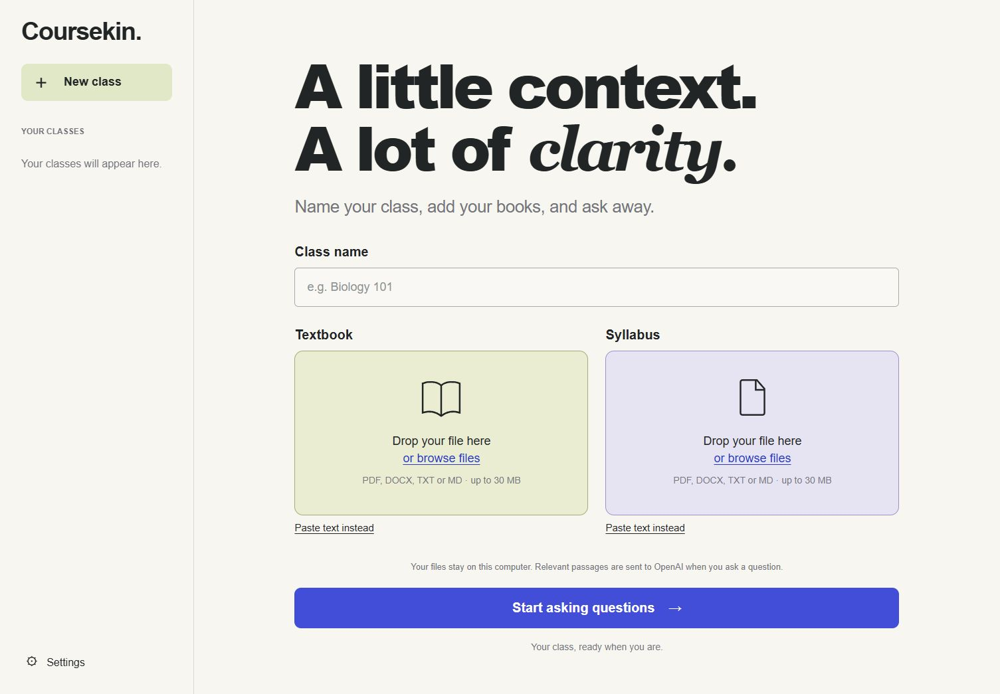

YOUR CLASS. YOUR MATERIALS.
A little help.
A lot more understanding.
Name your class. Add your textbook and syllabus. Ask the questions that get you unstuck.
Your study space
Files, conversations and model inference stay on this device. Export a backup before clearing browser data.
Runs on your device
First download needs storage and a compatible WebGPU graphics device. Model files come from public hosts; your prompts stay on this device.
Class materials
PDF, DOCX, TXT or Markdown, up to 25 MB per file. Scanned PDFs need OCR first.
Ask about your materials
LESS SETUP. MORE STUDYING.
From course files to clearer thinking.
- 1
Name your class
Biology 101. World history. Whatever you are working on.
- 2
Add your materials
Upload your textbook and syllabus in the study space above.
- 3
Start asking questions
Work through an idea, practice a problem or check your understanding.
A PLACE TO GET UNSTUCK
Your materials.
Within reach.
Coursekin keeps the class, source materials and conversation together on your device.
Earlier desktop edition pictured. The browser study space above needs no API key.

Your files belong with you.
This browser edition stores extracted text and conversations in this browser. Files are read locally and are not uploaded to a server. Public hosts provide model and document-reader assets. Source citations point to your uploaded documents, not external verification.
Made to help you learn.
Ask for hints, explanations and practice. Check answers against your course materials and follow your class rules for using AI.